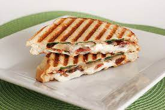

Bikini

Description
Bikini is the classic of sandwiches, the best cheese and ham toastie.
Ingredients
- 4 slices white sliced bread
- 10g butter
- 50g mozzarella di bufala
- 40g jamón de bellota
- truffle oil
Steps
- Spread the slices of bread with butter and remove the crusts.
- Cover two slices of bread with slices of mozzarella and fine slices of ham. Add top slices of bread and grill on both slices until crisp.
- Brush with truffle oil, cut into four triangles and serve.